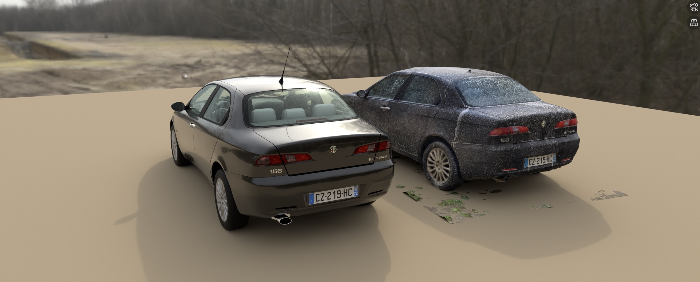

Some of my work recreating my Alfa Romeo 156

I am in the process of modeling my car for the simulation game Assetto Corsa.
This Alfa Romeo 156 is very fun to drive thanks to its great engine and unique suspension setup, and I am attempting to faithfully convey this in my recreation.
The following is an overview of the different parts of the work I have done to achieve this goal.
3D modeling



I made my own 3D model of the car from scratch because I wanted to learn 3D modeling, I wanted the result to be custom-made for Assetto Corsa, and there was no good 3D model of the car online to base my work on.
I used photoscanning to create a base for me to model over using Blender.
While I was more interested in modeling the physics, I find this car truly beautiful, so it was important for me to accurately replicate its looks and I am satisfied with the result.

Here is the interior geometry. The same process of photoscanning was used.
Physics modeling


Modeling the physics of the car accurately is tricky because Fiat hasn't shared a lot of technical information on this car.
While I have to guess and estimate for some of the data, I try to base my modeling on measurements as much as possible.
The scan in the first image was taken on an incline at a farm's axle weighing scale to try to calculate the height of the car's center of gravity.
I scanned my suspension as seen on the second image to accurately model the suspension geometry.
This car has Alfa's special multilink setup at the rear, giving it noticeable passive rear-wheel steering, which I hope to replicate in-game.
I taped my phone to the car and drove around, using its sensors to gather data on the car's pitch/roll under longitudinal and lateral acceleration.
Knowing the car's center of gravity height and suspension geometry, I hope to be able to approximate the front and rear wheel rate and anti-roll bar stiffness thanks to this data.


Engine sound recreation
I felt having a good, authentic engine sound was important because bad engine sounds stick out and make mods feel unpolished.
In Assetto Corsa, I found engine sound quality comes down almost entirely to the quality of the sound capture.

To capture interior engine sounds, I simply recorded from my computer's microphone after placing it in the passenger seat.
For the exterior sound, I first recorded the engine sound from the side of the road, driving by at different RPM and engine loads.
Problem was, from the side of the road, a road car's engine note like mine is typically drowned out by tyre noise,
and I could not separate the engine note from the tyre noise in software.
To partially solve this problem, I convinced a friend of mine to sit in my boot to record the sounds close to the exhaust. It was surprisingly confortable according to him.
The recording is mixed-in for the chase view, but it is not a great solution : recording close to the exhaust introduced noise from the exhaust gas airflow, but moving the microphone away introduced wind noises.

Conclusion
I have shown you all of this in the hope you can feel my dedication and passion for cars, driving dynamics and vehicle physics.
Thank you for your time and I hope to interview for this internship.
- Contacts :
- bastian.cataldi@free.fr
- +33 (0)7 83 79 67 25